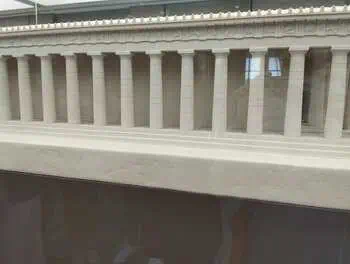
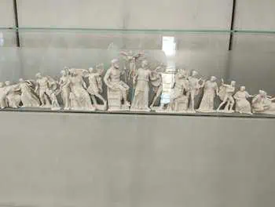
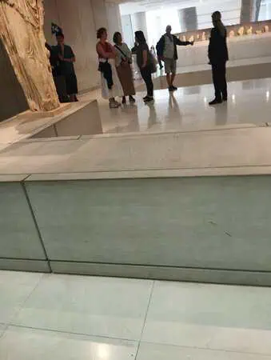
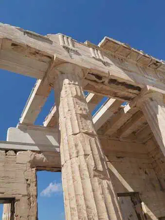
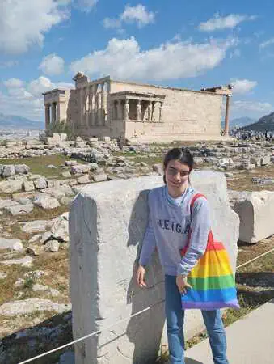
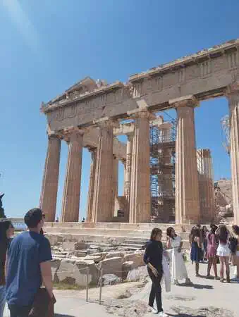
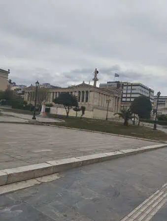
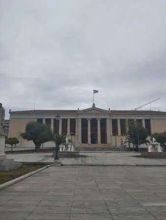
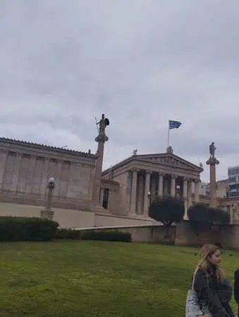
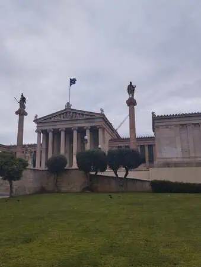

<!DOCTYPE html>
<html lang="es"></html>


<head>


<title>Dia 2</title>
<meta name="keywords" content="Atenas, Viajes, Grecia">
 <meta name="author" content="Antía" >
 <meta name="description" content="Pagina sobre el viaje a Grecia">
 <meta charset="utf-8">
 <link rel="icon" href="img/favicon-32x32.png" type="image/png">
 <link rel="stylesheet" href="estilosdias.css">
</head>
<body>
    
        <nav>
            <ul>
            <li><a href="index.html">Portada</a> </li>
            <li><a href="Dia1.html">Día 1</a> </li>
            <li><a href="Dia2.html">Día 2</a> </li>
            <li><a href="Dia3.html">Día 3</a> </li>
            <li><a href="Dia4.html">Día 4</a> </li>
            <li><a href="Dia5.html">Día 5</a> </li>
            <li><a href="Dia6.html">Día 6</a> </li>
            <li><a href="Dia7y8.html">Días 7 y 8</a></li>
        </ul>
        </nav>
    <h1>Día 2 (Partenón y centro)</h1>
<article>
    <p>El día comenzó a las 7 hora ateniense yendo a desayunar.
         Tras eso nos volvimos a juntar con la guía para ir al museo del partenón;
          cuando llegamos decidieron dividirnos en dos grupos  (para simplificar nos separaron en A y B)
           y comenzamos la visita.

</p>
</article>
<article>
    <div class="foto_derecha">
        
    <p>La visita estuvo genial y fue todo muy interesante,un momento cómico que recuerdo de esa visita 
     al museo fue cuando nos explicaron
     por que faltaba una de las cariátides explicación: Ingleses siendo ingleses. <br>
     Bueno después de eso subimos hasta la acrópolis para ver el partenón y los otros edificios, 
     a la bajada me compre la típica
    diadema de hojas doradas y tras la bajada fuimos a comer a un restaurante del centro.
    </p>
    
    
    
    
    
</div>
</article>

    
    
<article>
 <div class="foto_izquierda">
       
    
    
    
    <p>
La comida estaba muy  buena y cuando terminamos fuimos a pasear por el centro de Atenas,
 primero nos dieron un pequeño tour y después nos dejaron tiempo libre para comprar cosas. <br>

Nos volveríamos a juntar a las siete hora griega para volver al hotel de día,cabe destacar
 que excepto el ir al museo de la acrópolis  el resto de los trayectos entre sitios fuimos caminando.


    </p>
 </div>
</article>
<article>
    <p>
        Cuando llegamos al hotel fuimos a las habitaciones a ducharnos
         y prepararnos para cenar,pues al día siguiente teníamos que madrugar. <br>
Fue un dia mas que nada de visita para conocer la ciudad, honestamente me gusto mucho 
este dia porque conocimos lo que es Atenas en sí.

    </p>
</article>


</body>